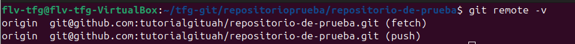
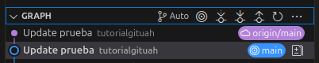

git remoteSe utiliza para gestionar conexiones con repositorios remotos como GitHub. Permite visualizar, agregar, modificar y eliminar referencias a repositorios remotos desde los que puedes hacer push, pull y fetch.

Dentro de la carpeta ejecutamos lo siguiente:
git remote -v
Esto mostrará todos los repositorios remotos conectados a tu proyecto local con sus URLs. Por defecto, suele haber un remoto llamado "origin" que apunta a tu repositorio en GitHub. En mi caso solo se muestra un repositorio remoto con la URL correspondiente (tanto para fetch como para push, ya que aun no he hecho pull para bajarme la versión actual).Si tienes varios repositorios en una carpeta podrías ver a que URL corresponde cada uno. Viene bien si tienes varios trabajos y quieres recordar a que URL corresponde cada uno.
Para listar todos los remotos:
git remote
Para agregar un nuevo repositorio remoto:
git remote add (nombre) (URL del repositorio)
Por ejemplo:git remote add origin https://github.com/usuario/repositorio.git
Para cambiar la URL de un remoto existente:
git remote set-url (nombre) (nueva URL)
Para eliminar un repositorio remoto:
git remote remove (nombre)
Para ver información detallada de un remoto:
git remote show (nombre)

En VSCode, puedes ver y gestionar los repositorios remotos a través de la paleta de comandos (Ctrl+Mayús+P) buscando "Git: Add Remote" o "Git: Remove Remote". También puedes ver el remoto actual en la rama que estés utilizando, en la pestaña de git de VSCode. El remoto "origin" suele comunicarse automáticamente con tu repositorio en GitHub establecido durante la clonación o inicialización.